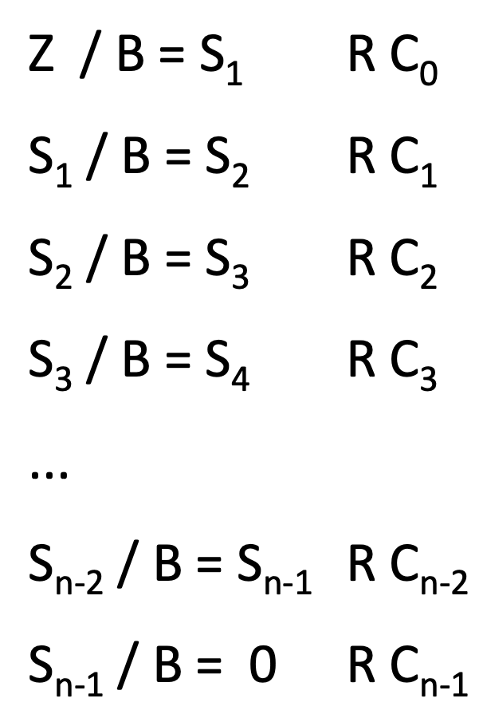

Zahlensysteme der Informatik
-
Natürliche Zahl:
Die Darstellung einer natürlichen Zahl $z$, mit einer dazugehörigen Basis $B$, wird durch folgende Summe definiert.
$$ z = \sum^{n}_{i=0} z_{i}\cdot B^{i} $$wobei:
$$ z = z_{n}\cdot z_{n-1}\cdot ...z_{1}\cdot z_{0}\ \left( z_{i}\in \left\{ 0,...,B-1\right\} \right) $$ -
Gebrochene Zahl:
Die Darstellung einer gebrochene Zahl $z$, mit einer dazugehörigen Basis $B$, wird durch folgende Summe definiert.
$$ z = \sum^{n}_{i=0} z_{i}\cdot B^{i} $$
Relevante Zahlensysteme
Es gibt einige häufig benutzte Zahlensysteme in der Informatik, die hier nach aufsteigender Basis geordnet sind:
-
Binärsystem, Dualsystem
$$ B=2$$ -
Oktalsystem
$$ B=8$$ -
Dezimalsystem
$$ B=10$$ -
Hexadezimalsystem
$$ B=16$$
Das jedoch allerwichtigste Zahlensystem in der Informatik ist das Binärsystem.
Basiswechsel
Ein Basiswechsel ist das Wechseln der Basis einer Zahl.
Dezimalzahlen in Binärzahlen: Algorithmus
Um Dezimalzahlen in Binärzahlen umzuwandeln braucht es einem Algorithmus der wie folgt vorgeht:
-
Die Zahl wird durch die Basis 2 geteilt.
-
Der Rest wird gespeichert, entweder 0 oder 1.
-
Dieser Prozess wird mit dem Resultat aus Schritt 1 solange wiederholt bis der Rest 1 ist.
-
Die Binärzahl ist nun die Zusammensetzung der Reste zu einer Zahl von der letzten Division bis zur ersten.
Besteht eine Zahl auch noch oder nur aus einem gebrochenen Anteil, muss ein anderer Algorithmus verwendet werden.
-
Der gebrochener Anteil der Zahl wird mit die Basis 2 multipliziert.
-
Das Resultat wird umgeschrieben in die Form ganzzahliger Anteil des Resultates addiert mit dem gebrochenen Anteil des Resultates.
-
Dieser Prozess wird mit dem gebrochenen Anteil des Resultats aus Schritt 1 solange wiederholt bis sich eine Wiederholung zeigt oder das Resultat 0,0 + 0 ergibt.
-
Die Binärzahl ist nun die Zusammensetzung der ganzzahligen Anteile der Resultate zu einer Zahl; von der letzten Multiplikation bis zur ersten.
Allgemein
Dieser Algorithmus ausgeschrieben ergibt:
-
Für den ganzzahligen Anteil:
Wobei:
$$ Z,\ Zu\ umwandelnde\ Zahl$$ $$ S,\ Resultat $$ $$ B,\ Basis\ in\ die\ umgewandelt\ wird $$ $$C,\ Rest\ der\ Division$$ -
Für den gebrochenen Anteil:
Wobei:
$$ Z,\ Zu\ umwandelnde\ Zahl$$ $$ S,\ Resultat $$ $$ B,\ Basis\ in\ die\ umgewandelt\ wird $$ $$C,\ Rest\ der\ Division$$
Zweierkomplement
Das Zweierkomplement wird wie folgt berechnet:
-
Als erstes werden die Bits der gegebene Binärzahl invertiert.
Aus 1 wird 0 und aus 0 wird 1. -
Dem Resultat wird 1 hinzuaddiert.
Ein möglicher Überlauf wird verworfen.
Negative Binärzahlen
Das Zweierkomplement kann in verschieden Systemen als negative Binärzahl angesehen werden.
Addition, Subtraktion, Multiplikation, Division
Bei der Subtraktion wird das Zweierkomplement der Zahl addiert.
Addition, Multiplikation und Division haben analoge Vorgänge zu den
Dezimalzahlen.